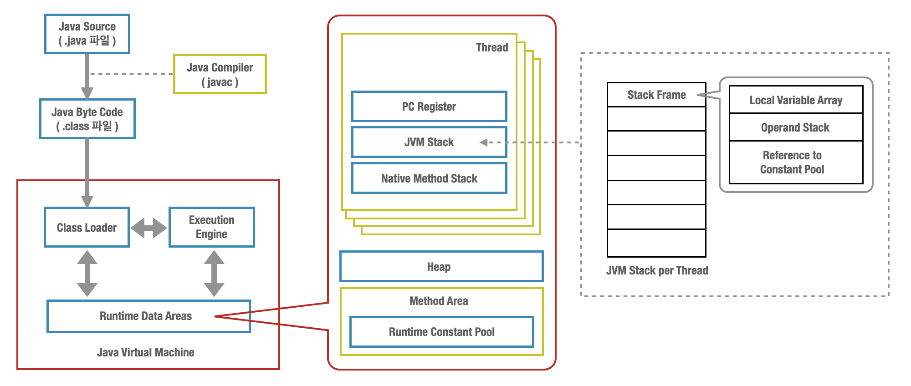

JVM은 스펙을 정해 놓고 JVM 벤더들이 이 정해진 스펙에 맞춰서 JVM을 개발하게 하는데, JVM 스펙에서 정의해놓지 않은 부분들은 벤더의 재량에 맡긴다.
예를 들어, 힙의 구조나 GC 방식 등은 JVM 벤더의 재량이므로 어떻게 구현되느냐에 따라서 해당 기술의 동작이나 방식이 달라진다고 할 수 있다.
그래서 오늘은 JVM 구현의 근본인 JVM 스펙을 읽어보고 JVM이 어떤 구조를 가지고 어떻게 동작하는 지 알아보도록 하겠다.
그럼 본론으로 들어가기전에 그림으로 전체적인 구조를 파악해보자.
아래 그림은 Naver D2 JVM Internal이라는 글에서 발췌한 그림들을 직접 짜맞춰 놓은 그림이고, 전체적인 JVM의 구조는 아래의 그림과 같다.
오늘은 아래 그림의 가운데에 보이는 런 타임 데이터 영역(Runtime Data Areas) 부분을 살펴볼 예정이다. (나머지 부분도 추후에 정리를 해놓을 생각이다.)

PC register
- JVM의 각 스레드는 각자의 pc(program counter) 레지스터를 갖는다.
- 현재 수행 중인 JVM 인스트럭션의 주소를 담고있다.
JVM stack
- JVM의 각각의 스레드는 공유되지 않는 자신만의 JVM 스택을 가지며, 이 스택은 스레드의 생성과 동시에 생성이 된다.
- 스택 프레임(Frame)을 저장하는 스택이다.
- 전통적인 프로그래밍 언어인 C의 스택과 유사한 개념이다.
Frame
- JVM 내에서 메소드가 수행될 때 마다 새로운 프레임이 생성되어 스택에 추가되고 메서드가 종료되면 스택에서 제거된다.
- 각각의 프레임은 자신만의 지역 변수 배열, 피연산자 스택, 현재 수행중인 메소드가 속한 클래스의 런 타임 상수 풀에 대한 참조를 갖는다.
Heap
- JVM이 시작될 때 생성되며, 모든 JVM 스레드가 공유하는 영역이다.
- 클래스 인스턴스와 배열들이 저장되는 공간이다.
- GC(가비지 콜렉터)에 의해 관리되는 공간으로 자원들을 명시적으로 deallocation을 할 필요가 없다.
- JVM 스펙에서는 특정한 GC의 기술(또는 방식)을 정의하지 않고 있으며, 이는 JVM 벤더의 재량이다.
Method Area
- JVM이 시작될 때 생성되며, 모든 JVM 스레드가 공유하는 영역이다.
- C와 같은 전통적인(?) 프로그래밍 언어의 컴파일된 코드를 저장하는 공간이라고 보면 된다.
- 또는 OS 프로세스가 가지는 메모리의 “text” 세그먼트와 유사하다.
- 참고. text 세그먼트는 실행가능한 명령어를 포함하고 있는 메모리 영역이다.
- JVM이 읽어 들인 각각의 클래스에 대한 런타임 상수 풀, 필드와 메서드 정보, static 변수, 메서드의 바이트코드 등을 보관한다.
Run-Time Constant Pool
- JVM 동작에서 가장 핵심적인 역할을 수행하는 곳이다.
- 각각의 클래스와 인터페이스에 대한 런 타임 상수 풀은 JVM에 의해 클래스나 인터페이스가 처음 생성될 때 만들어진다.
- 각 클래스와 인터페이스의 상수뿐만 아니라, 메서드와 필드에 대한 모든 레퍼런스까지 담고 있는 테이블이다.
- 즉, 어떤 메서드나 필드를 참조할 때 JVM은 런타임 상수 풀을 통해 해당 메서드나 필드의 실제 메모리상 주소를 찾아서 참조한다.
- javac xxxxx.java 명령어로 자바 파일을 컴파일 한 후, javap -c -s -verbose xxxxx.class 명령어를 수행하면 Constant pool을 직접 볼 수 있다.
Reference
The Java® Virtual Machine Specification
Naver D2, JVM Internal